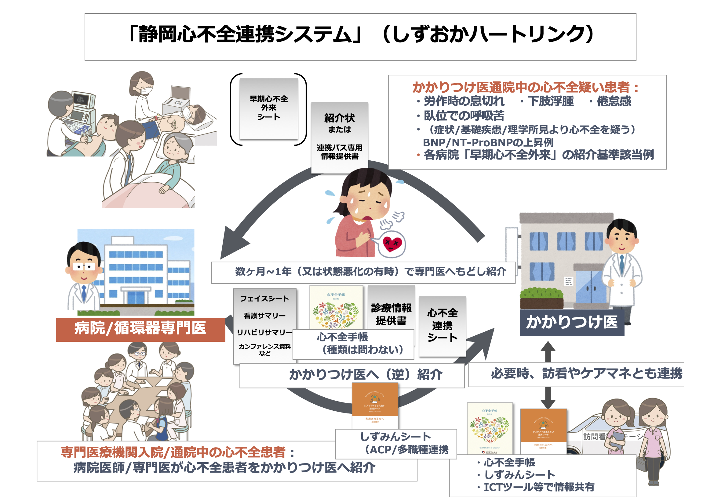

システムの概要
本システムは「心不全臨床ステージC（症候性心不全）」を中心とした病院・かかりつけ医間の連携のみならず、「早期発見（入り口）=ステージA」と「生活・人生の質の維持（出口）」を包括し、ICT活用を含めた多職種連携による心不全患者の継ぎ目のないケアを目指しています。
従来のイーツーネット医療連携システムは、病院とかかりつけ医=主治医2人（医2）を中心とする連携でしたが、心不全連携は医療・介護の多職種連携が重要となります。複数の職種がつながって連携を行う（=リンク：link）ことから「しずおかハートリンク（S-HF link）」と命名致しました。
入り口
早期発見・早期介入
BNP上昇などの兆候を早期に捉え、専門医による精査・診断を経て、かかりつけ医での管理につなげます。
中心
病院・かかりつけ医連携
症候性心不全（Stage C）の再入院予防のため、紹介状や手帳を用いた情報の共有と、増悪時の迅速な戻し紹介を徹底します。
出口
生活・人生の質の維持
多職種連携やICT、ACPツール（シズみんシート）を活用し、患者の価値観を尊重した療養生活を支えます。
連携フロー図

連携の実際
1. かかりつけ医 ➡ 病院（初回紹介）
対象：BNP上昇例など、心不全早期または隠れ心不全が疑われる患者
- かかりつけ医から専門医（病院）外来へ紹介。
[添付書類]
- 各病院の早期心不全外来シート
- または「静岡心不全地域連携パス専用情報提供書（かかりつけ医→専門医）」
- 専門医にて精査を実施。
- 心不全連携へ登録し、かかりつけ医へ「もどし紹介」。
[逆紹介時のセット]
- 心不全手帳（記載済み）
- 心不全連携シート（病院→かかりつけ医）
※体重・BNP値、戻し紹介基準等を記載 - その他添付：フェイスシート、看護サマリー、リハビリサマリー、多職種カンファレンス資料など（可能な場合）
2. 病院 ➡ かかりつけ医（逆紹介）
対象：入院治療後など、状態が安定し地域へ戻る患者
- 病院にて心不全連携へ登録。
- かかりつけ医へ逆紹介。
[逆紹介時のセット]
- 心不全手帳（記載・発行）
- 心不全連携シート（病院→かかりつけ医）
※体重・BNP値、戻し紹介基準等を記載 - その他添付：フェイスシート、看護サマリー、リハビリサマリー、多職種カンファレンス資料など（可能な場合）
- 【かかりつけ医の役割】
- 定期チェックの実施。
- 必要に応じて訪問看護ステーションやケアマネジャーと連携・情報共有（ICT活用を含む）。
- ACPなどの必要な場合は、「シズケア＊ささえあい連携シート（通称シズみんシート）」を導入する。
静岡心不全連携/かかりつけ医向け診療ガイド
【心不全診断・リスク層別化とBNP解釈】
心不全を疑う症状（息切れ、浮腫）がある時、または病状安定度のモニタリング時に測定してください。
※注意：ARNI（エンレスト）内服中はNT-proBNPで評価してください（BNPは分解抑制により高値となります）。
心不全を疑う症状（息切れ、浮腫）がある時、または病状安定度のモニタリング時に測定してください。
※注意：ARNI（エンレスト）内服中はNT-proBNPで評価してください（BNPは分解抑制により高値となります）。
1. ナトリウム利尿ペプチド（BNP/NT-proBNP）解釈フロー

| 判定区分 | BNP (pg/mL) |
NT-proBNP (pg/mL) |
臨床的解釈と推奨アクション |
|---|---|---|---|
| 除外 (緑) | < 35 | < 125 |
心不全の可能性は低い 呼吸器疾患、貧血、腎疾患、薬剤性浮腫などを鑑別。 経過観察または他科紹介。 |
| 要注意 (黄) (Grey Zone) |
35 ～ 100 | 125 ～ 300 ※高齢者（≧75歳）は ～500程度まで |
軽症心不全 または 心不全予備軍 (Stage A/B) Act: 胸部X線、心電図。 Refer: 早期心不全外来、または専門医（心エコー可能施設）へ紹介を推奨。 リスク因子（高血圧、糖尿病、心房細動）の管理強化。 ※日本循環器学会・日本心不全学会2025年ガイドライン、2023年ステートメントに基づく |
| 高リスク (橙) | 100 ～ 200 | 300 ～ 900 ※高齢者は調整要 |
心不全の可能性が高い (Stage C) Refer: 速やかに病院（専門医）へ紹介。 症状が強い場合は緊急搬送も考慮。 |
| 緊急 (赤) | ≧ 200 | ≧ 900 |
高リスク心不全 (Stage C/D) Urgent: 緊急性を考慮し、速やかに専門医へ。 症状によっては救急搬送。 |
＜解釈のピットフォール（補正因子）＞
- 値が高く出る： 加齢、腎機能低下（特にNT-proBNP）、心房細動。
- 値が低く出る： 肥満（BMI≧30）。
- 判断のコツ： 絶対値だけでなく、「前回と比較してNT-proBNPが30%以上、BNPが40%以上の上昇」を有意な変化とみなす（心不全増悪の可能性を考慮）。
2. 体液管理と利尿薬調整プロトコル
目標： うっ血のない状態（ドライウェイト: DW）の維持。
基本： 患者の「心不全手帳」を確認し、毎日の体重変化を見る。
A. うっ血のサイン（フィジカルアセスメント）
- 頸静脈怒張： 45度座位で胸骨角より3cm以上 → 右房圧上昇のサイン。
- 心音： Ⅲ音（過剰心音）の聴取 → 容量負荷のサイン。
- 浮腫： 向こうずね（前脛骨部）または寝たきりなら背中（仙骨部）を圧迫。
B. 利尿薬調整フローチャート（例）
1. 体重増加（+2kg以上） ＆ 浮腫あり
- Action: ループ利尿薬の一時増量（例：フロセミド 10-20mg追加）。
必要に応じて、ループ利尿薬の静脈内ボーラス投与追加（例：フロセミド 5-20mg i.v.）。
※急性心不全時には、消化管浮腫により経口薬の吸収が著しく低下していることが多いため - Check: 1週間以内に電解質（NaおよびK）と腎機能（BUNおよびCre）を確認。
2. 改善しない または 呼吸困難出現
- Action: 専門医へ紹介。トルバプタン導入（入院が必要）などの検討。
3. 利尿薬増量後のCre上昇
- 判断: 0.3mg/dL程度の一時的な上昇であれば、うっ血が残っている限り利尿薬を中止しない。脱水所見がなく体液過剰が持続していれば継続可能（一過性のCre上昇は長期予後に影響しない： DOSE trial； N Engl J Med 2011; 364:797-805.）。
3. 重要FAQ
1. SGLT2阻害薬の「シックデイ・ルール」は？
1. 発熱・下痢・嘔吐・食思不振時は「休薬」してください。
- 理由： 脱水によるケトアシドーシス（正常血糖でも発症）や腎障害を防ぐため。
- 再開： 食事が摂れ、水分が十分に取れるようになってから再開。
2. 血圧が低い（SBP 90mmHg台）ですが大丈夫ですか？
2. ふらつき等の症状がなければ、減薬せず継続してください。
心不全治療薬（β遮断薬、ARNI等）は予後を改善します。数値だけで減量せず、可能な限り維持することが重要です。
心不全治療薬（β遮断薬、ARNI等）は予後を改善します。数値だけで減量せず、可能な限り維持することが重要です。
3. 貧血がなくても「鉄」を調べるべきですか？
3. はい。 心不全患者ではフェリチン、TSAT（血清鉄/TIBC）を測定してください。
- 基準： フェリチン<100 または 100-299かつTSAT<20% は「鉄欠乏」です。
- 治療： 心不全増悪を防ぐため、静注鉄剤による補充が推奨されます（経口鉄剤は吸収されにくい）。
資材ダウンロード・外部リンク
医師・医療機関向け
📄 心不全連携シート（病院→かかりつけ医） 📄 静岡心不全地域連携パス専用情報提供書（かかりつけ医→専門医） 📄 静岡心不全連携/診療管理ガイド (PDF)
📘 日本循環器学会/日本心不全学会合同ガイドライン
2025年改訂版心不全診療ガイドライン ↗ 📗 日本心不全学会
血中BNPやNT-proBNPを用いた心不全診療に関するステートメント2023年改訂版 ↗
早期心不全外来 実施医療機関（静岡市内）
静岡市立静岡病院 > 早期心不全外来と短期支援入院
静岡市立静岡病院 情報シート (Excel)
静岡済生会総合病院 > 早期心不全BNP外来
静岡済生会総合病院 チェックシート (PDF)
静岡市立静岡病院 > 早期心不全外来と短期支援入院
静岡市立静岡病院 情報シート (Excel)
静岡済生会総合病院 > 早期心不全BNP外来
静岡済生会総合病院 チェックシート (PDF)
患者指導・多職種連携向け
心不全手帳・ACP・ICT
📓 心不全手帳 (PDF全ページ/心不全学会) ↗ 🤝 シズケア＊ささえあい連携シート (ACP) ↗ 💻 シズケア＊かけはし (ICT連携) ↗静岡心不全多職種連携の会
👥 しずおかハートネット（S-HFnet）：心不全多職種連携の会 ↗